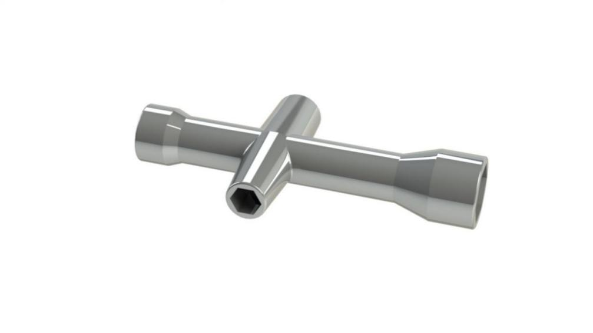

Building the Car¶
Extremely excited when opening the box and checking so many components? Keep your patience and take it easy. Please note that some details in the following steps need CAREFUL observation. You should double-check your work based on the figures in the manual after finishing each step. Don’t worry! Kindly reminders will be given in some particular steps. Just follow the tutorial step by step. Okay, with no further ado, now let’s start!
Front Half Chassis¶
Assemble the Front Half Chassis with four M3x25 copper standoffs and four M3 nuts as shown below:

Front Wheels¶
注釈
Please pay attention to the direction of Steering Connector before assembling.
Insert an M4x25 screw through a Steering Connector, 3 Bearing Shields, 3 Hex Front Wheel Fixing Plates, and a front wheel, into an M4 Self-locking Nut (note the direction) as shown below:

You can use the Cross Socket Wrench to secure the M4 Self-locking Nut, then use the screwdriver to tighten the M4x25 screw.
注釈
The Self-locking Nut should be screwed tight enough. It would be better to tighten the screw until the wheel and Steering Connector cannot move first, then loosen the screw a little, so that the Steering Plate can just move. Thus, the wheel can turn flexibly when the connection would not be too loose.
Assemble the other front wheel in the same way, but bear in mind the Steering Connector on the wheel should be symmetric with the previous one:

Now two front wheels have finished assembly.
Steering Part¶
Connect the Steering Linkage and the 1-arm Rocker Arm with the M1.5x4 Self-tapping Screw.
注釈
Insert it into the FIRST hole of the arm (as indicated by the arrow below) which is the farthest from the gears.

注釈
Fasten them as tightly as possible, and then loosen the screw a little so the Steering Linkage can move flexibly.
Upper Plate¶
Mount the M2.5x8 copper standoffs and M2.5 nuts into the upper plate first. Pay attention that the side the protruding prop should face up.

Battery Holder¶
Turn the Upper Plate upside down. Cut the ribbon into two halves. Thread them through the holes on the plate. Pay attention to the direction and leave one end longer out of the plate for each to remove the battery easily later.

Fasten the battery holder with two M3x8 countersunk screws and two M3 nuts: pay attention to the direction of battery holder’s wire.


PCB Assembly¶
Assemble the Raspberry Pi (TF Card inserted) with eight M2.5x8 copper standoffs, then plug the Robot HATS onto it.
Fix the Robot HATS with four M2.5x6 screws.
Fix The PCA9685 PWM Driver, the Motor Driver with eight M2.5x12 screws and M2.5 nuts into the down plate.
Rear Wheels (Driving)¶
Assemble the two motors to the Back Half Chassis with four M3x25 screws and M3 nuts. Pay attention to place the motors with wires inward, providing convenience for connecting the circuit.

Assemble the rear wheels with 4 M3 nuts.

Align the rear wheels with the motor shaft, and rotate to insert them gently.